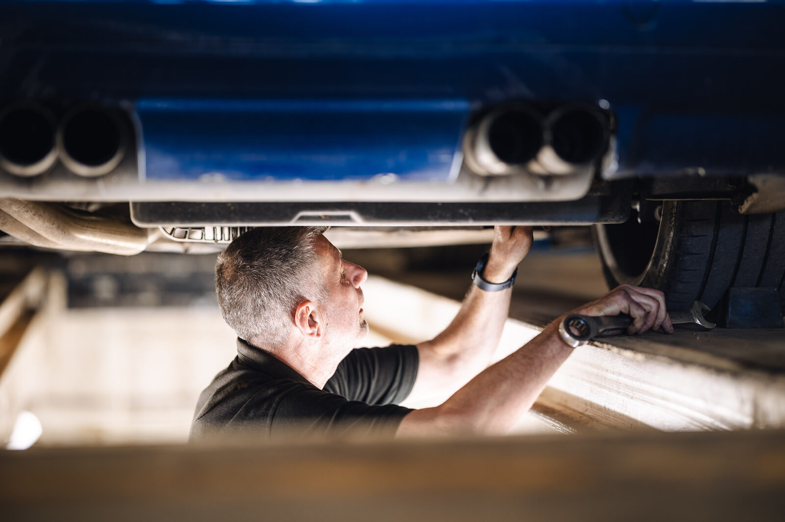

On-Site MOT Testing Near Salisbury
at Bromspec MotorWorks
Looking for a trusted MOT test centre near Salisbury? At Bromspec MotorWorks, we provide professional on-site MOT testing for BMW, MINI and all makes and models from our specialist workshop just outside Salisbury near Lopcombe Corner.
Enjoy complete peace of mind knowing your vehicle is tested to the highest standard, with no hidden extras, unnecessary repairs or inflated bills.
Everything you need. Nothing you don't.
All MOTs are carried out on-site by experienced technicians using professional-grade diagnostic and testing equipment. Because we specialise in BMW and MINI vehicles, our team understands these cars inside out, but the same care, precision and attention to detail is applied to every vehicle that enters our workshop.
We believe you should be able to speak directly with the technician who inspected your car. If your vehicle receives advisories or fails its MOT, we explain everything clearly and honestly so you understand exactly what's needed and why. No jargon, no pressure and no upselling.
Our goal is simple: to keep your vehicle safe, road legal and performing exactly as it should while giving you complete confidence in the process.
Whether you drive a BMW, MINI or another vehicle entirely, you can expect the same high standards, transparency and professional care every time you visit Bromspec MotorWorks.

BMW MOTs Done the Bromspec Way
An MOT at Bromspec is more than a legal requirement. It is part of looking after your BMW properly.
Your car is tested on site by BMW-trained technicians who work with these vehicles every day. That means potential issues are identified early, explained clearly, and handled with the care and accuracy BMWs demand, not rushed through or treated as a box-ticking exercise.
For many customers, their MOT is the first step in a long-term relationship with Bromspec. Once you experience the level of knowledge, transparency and convenience we offer, choosing us for everything BMW related simply makes sense.
Why BMW owners choose Bromspec for their MOT:
- On-site MOT testing by experienced specialist technicians
- BMW & MINI experts servicing all makes and models
- Honest advice with no unnecessary work or upselling
- Direct communication with the technician who carried out the test
- While-you-wait MOT appointments available
- Courtesy cars available with advance booking
- Comfortable waiting area with Wi-Fi and refreshments
- Easy access location just outside Salisbury with no town-centre traffic
What's Covered in your MOT Test?
An MOT test is a detailed safety inspection that checks your vehicle is roadworthy and meets legal standards. At Bromspec MotorWorks, we assess all key safety and performance areas to ensure your car is safe, compliant and performing as it should.
This includes checks on your brakes, tyres, steering, suspension and exhaust system, as well as essential safety features such as seatbelts, airbags, lights, wipers and windscreen condition. We also inspect key exterior elements like number plates, mirrors, doors and body condition, along with emissions and dashboard warning lights where applicable.
Every test is carried out thoroughly and professionally, with clear explanations of any advisories or required repairs.
You can find more detailed information about what's checked during an MOT test by clicking the button below.
More Than Just an MOT
An MOT is only one part of keeping your car in top condition. At Bromspec MotorWorks, we also offer specialist BMW and Mini servicing, maintenance and diagnostics, giving you everything you need to keep your car safe, reliable and performing at its best.
From routine servicing and preventative maintenance to advanced fault-finding and repairs, our experienced technicians use manufacturer-level diagnostics, proven repair procedures and high-quality parts to deliver the standard of care your vehicle deserves.
If your MOT identifies any advisories or areas requiring attention, our team can provide clear guidance and expert support, helping you stay ahead of potential issues and avoid more costly repairs in the future.
We also offer:
- Manufacturer-level servicing
- Advanced BMW diagnostics
- Preventative maintenance to avoid costly future repairs
Not Just BMW? We Can Help
While BMW and MINI are our speciality (and always will be), we also service and MOT all makes and models to the same high standards.
If you value expert workmanship, honest advice and a smooth experience, you'll feel right at home here.
A Garage Worth Travelling For
Our workshop is conveniently located just outside Salisbury near Lopcombe Corner, making Bromspec easily accessible from across Wiltshire and the surrounding areas.
Whether you are commuting to work, heading home or planning to wait while your vehicle is tested, our location avoids the stress of busy town-centre traffic and congestion.
If you prefer to leave your vehicle with us for the day, courtesy cars are available with advance booking so you can continue with your plans uninterrupted.
For BMW and MINI owners looking for a genuine specialist garage near Salisbury, Bromspec offers the expertise, honesty and customer experience that local drivers travel for.
Related services
Book Your Appointment Today
Whether you need a quick and straightforward MOT, our team is ready to help. Call us today or book your appointment through our website and let our BMW specialists take care of the rest.